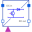

IdealGTOThyristorIdeal GTO thyristor |
Information
This information is part of the Modelica Standard Library maintained by the Modelica Association.
This is an ideal GTO thyristor or switching transistor, for details see partial model IdealSemiconductor
The GTO thyristor is conducting if voltage > Vknee AND fire = true.
Otherwise, the GTO thyristor is locking.
Parameters (5)
| useHeatPort |
Value: false Type: Boolean Description: =true, if heatPort is enabled |
|---|---|
| T |
Value: 293.15 Type: Temperature (K) Description: Fixed device temperature if useHeatPort = false |
| Ron |
Value: 1e-5 Type: Resistance (Ω) Description: Forward state-on differential resistance (closed resistance) |
| Goff |
Value: 1e-5 Type: Conductance (S) Description: Backward state-off conductance (opened conductance) |
| Vknee |
Value: 0 Type: Voltage (V) Description: Forward threshold voltage |
Connectors (4)
| p |
Type: PositivePin Description: Positive electrical pin |
|
|---|---|---|
| n |
Type: NegativePin Description: Negative electrical pin |
|
| heatPort |
Type: HeatPort_a Description: Conditional heat port |
|
| fire |
Type: BooleanInput |
Used in Examples (1)
|
Modelica.Electrical.Analog.Examples Characteristic of ideal thyristors |
Used in Components (4)
|
Modelica.Electrical.MultiPhase.Ideal Multiphase ideal GTO thyristor |
|
|
Modelica.Electrical.PowerConverters.DCAC Single phase DC to AC converter |
|
|
Modelica.Electrical.PowerConverters.DCDC Step down chopper |
|
|  |
Modelica.Electrical.PowerConverters.DCDC Step up chopper |